第05讲 难点探究专题：数轴上的行程问题(5类热点题型讲练)
目录
【考点一 数轴上的行程问题之相遇问题】 1
【考点二 数轴上的行程问题之相距问题】 4
【考点三 数轴上的行程问题之三点中点问题】 8
【考点四 数轴上的行程问题之新定义型问题】 13
【考点五 数轴上的行程问题之折线数轴问题】 17
【考点一 数轴上的行程问题之相遇问题】
例题：（24-25七年级上·江苏·阶段练习）如图，已知数轴上点A表示的数为4，点B是数轴上在点A左侧的一点，且A、B两点间的距离为8，动点P从点A出发，以每秒2个单位长度的速度沿数轴向左匀速运动．
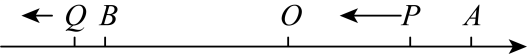
（1）数轴上点B表示的数是 ；
（2）运动1秒时，点P表示的数是 ；
（3）动点Q从点B出发，以每秒1个单位长度的速度沿数轴向左匀速运动，若点P、Q同时出发，当点P运动 秒时，点P与点Q相遇．
【答案】（1）
（2）2
（3）8
【知识点】数轴上两点之间的距离、数轴上的动点问题、行程问题(一元一次方程的应用)
【分析】本题考查了数轴的应用和一元一次方程的应用——行程问题，
（1）由 的长、点A表示的数及点B在点A的左侧，可求出点B表示的数；
的长、点A表示的数及点B在点A的左侧，可求出点B表示的数；
（2）利用1秒后点P表示的数 点A表示的数
点A表示的数 点P运动的速度
点P运动的速度 运动时间，即可求出结论；
运动时间，即可求出结论；
（3）设当运动时间为t秒时，点P表示的数为
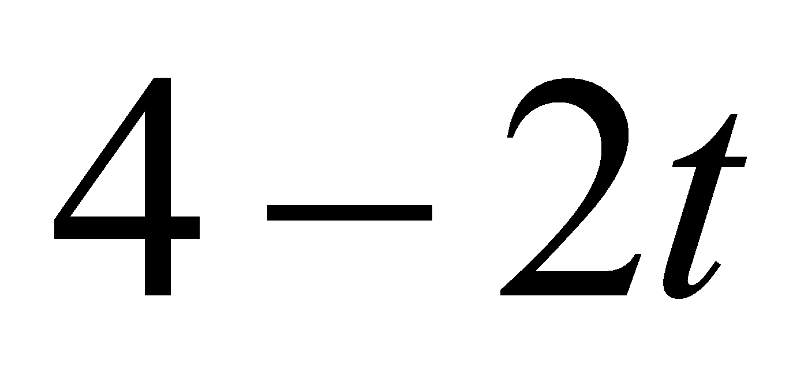
，点Q表示的数为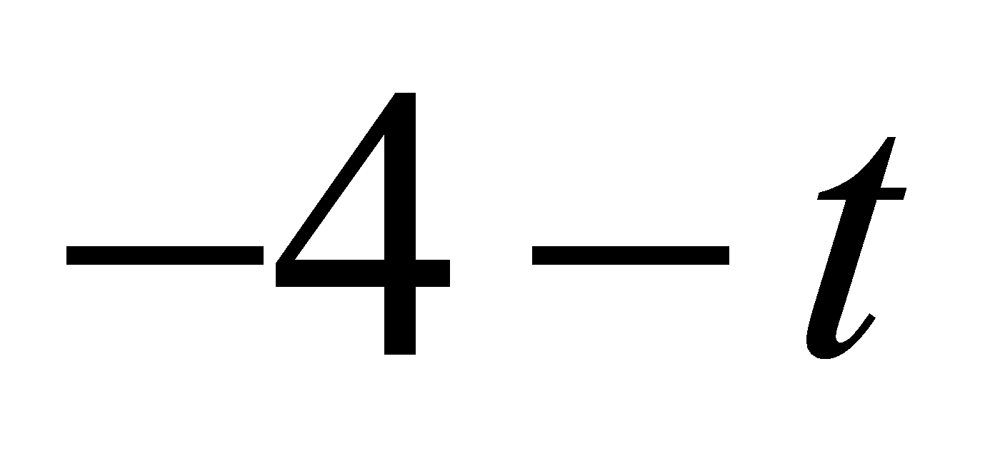
，由点P与点Q相遇，即可得出关于t的一元一次方程，解之即可得出结论．【详解】（1）解： 点A表示的数为4，点
点A表示的数为4，点 是数轴上在点A左侧的一点，且A、两点间的距离为8，
是数轴上在点A左侧的一点，且A、两点间的距离为8，
 点B表示的数为
点B表示的数为
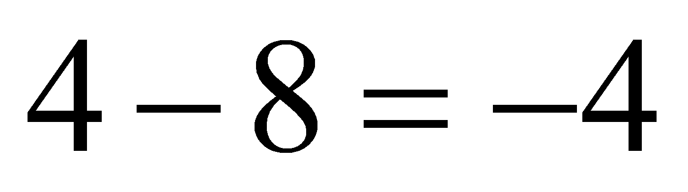
，故答案为：；
（2）动点 从点A出发，以每秒2个单位长度的速度沿数轴向左匀速运动，
从点A出发，以每秒2个单位长度的速度沿数轴向左匀速运动，
运动1秒时，点运动了
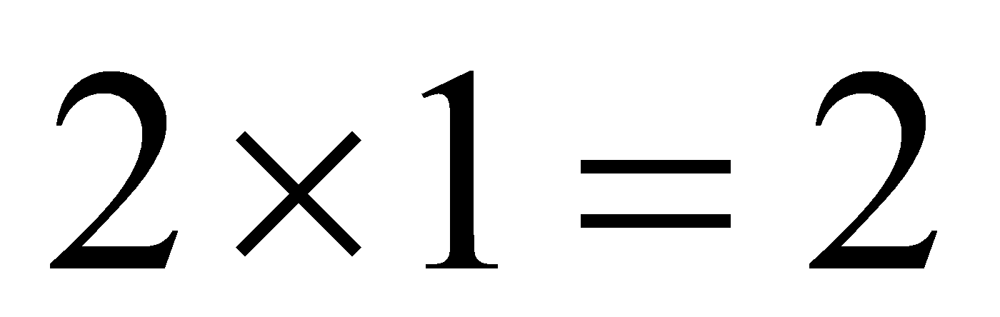
个单位长度，此时点表示的数为 ，
，
故答案为：2
（3）设当运动时间为t秒时，点P与点Q相遇，
此时点P表示的数为，点Q表示的数为，
由题意得
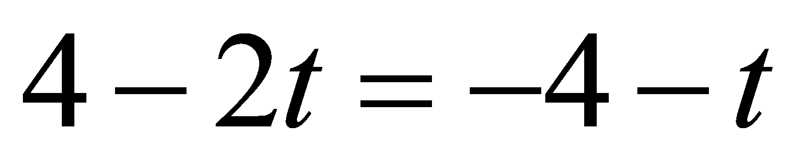
，解得： ，
，
当运动时间为8秒时，点P与点Q相遇，
故答案为：8．
【变式训练】
1．（23-24七年级上·浙江温州·期中）如图，点A和B在数轴上分别表示数 ，
， ，点0为原点．甲、乙两人分别从点A，B同时出发，在线段间往返运动，甲的速度为每秒3个单位长度，乙的速度为每秒2个单位长度．
，点0为原点．甲、乙两人分别从点A，B同时出发，在线段间往返运动，甲的速度为每秒3个单位长度，乙的速度为每秒2个单位长度．
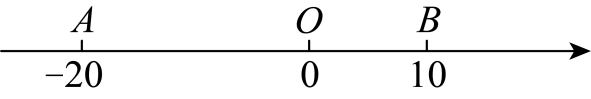
(1)求点A，B之间的距离．
(2)①经过______秒，甲、乙两人第一次相遇．
②经过______秒，甲、乙两人第二次相遇，此时相遇点在数轴上表示的数为______．
【答案】(1)
(2)①6；②18；
【知识点】行程问题(一元一次方程的应用)、数轴上两点之间的距离
【分析】本题主要考查了数轴上两点的距离计算，一元一次方程的实际应用，正确根据数轴上两点的距离计算公式列出方程求解是解题的关键．
（1）用点B表示的数减去点A表示的数即可得到答案；
（2）①设经过t秒，甲、乙两人第一次相遇，根据第一次相遇时，甲乙所走的路程之和为点A和点B之间的距离列出方程求解即可；②先根据题意推出第二次相遇时，甲第一次从B向A运动，乙第一次从A向B运动，设运动时间为m，根据第二次相遇时甲乙表示的数相同得到方程
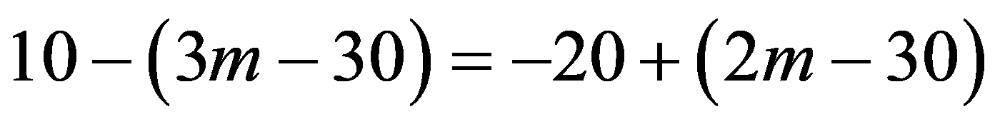
，解方程即可得到答案．【详解】（1）解：由题意得，点A，B之间的距离为
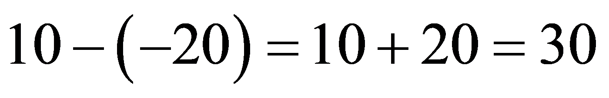
；（2）解；①设经过t秒，甲、乙两人第一次相遇，
由题意得，
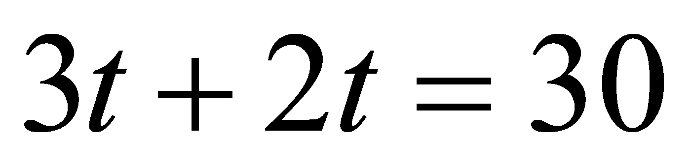
，解得
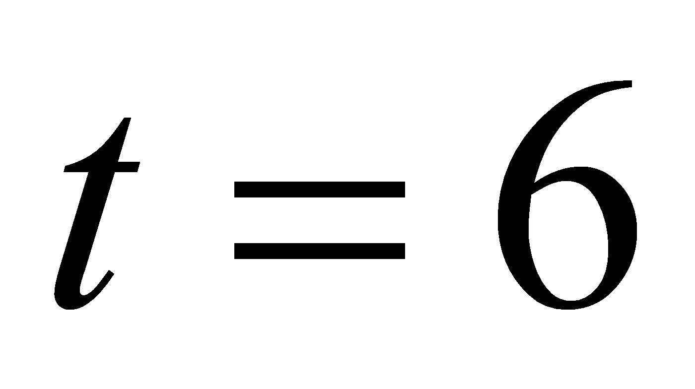
，∴经过6秒，甲、乙两人第一次相遇；
②∵甲第一次返回A时需要的时间为
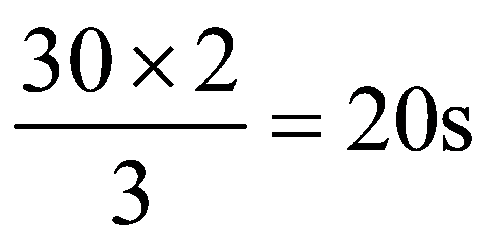
，乙第一次到达A的时间为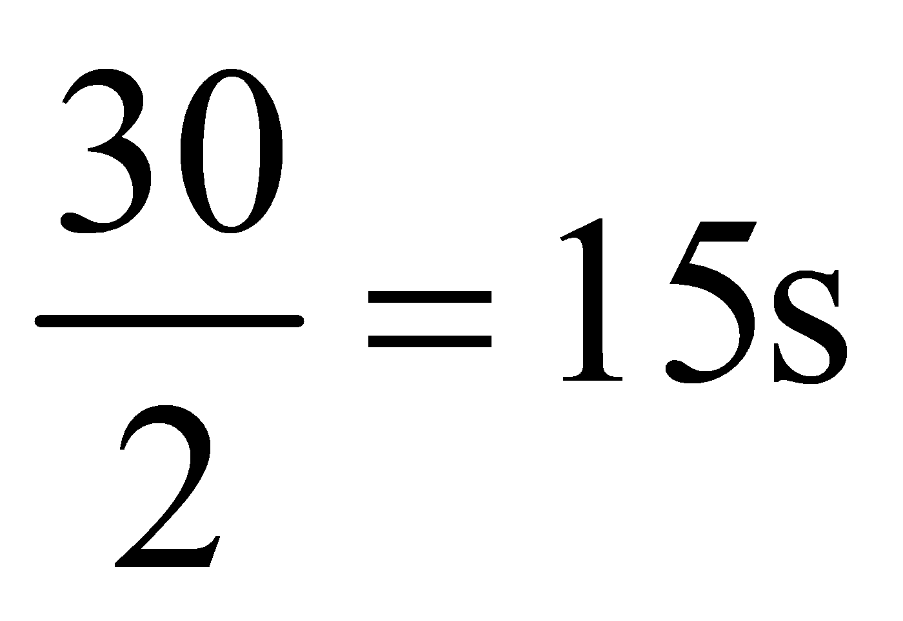
，乙第一次返回B的时间为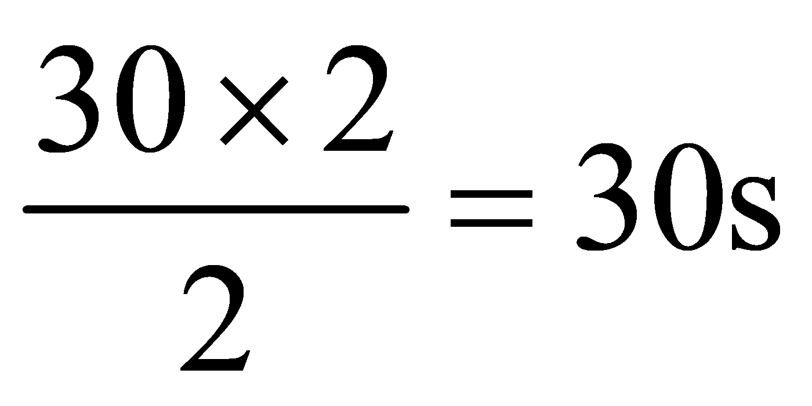
，∴第二次相遇时，甲第一次从B向A运动，乙第一次从A向B运动，
设运动时间为m，
由题意得，，
解得 ，
，
∴此时相遇点表示的数为
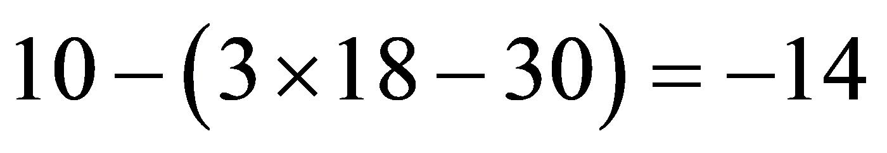
，故答案为：18；．
2．（23-24七年级上·湖北黄石·期末）已知数轴上有 、两点，分别表示的数为
、两点，分别表示的数为 和
和 ，点以每秒
，点以每秒 个单位的速度沿数轴向右匀速运动，点以每秒
个单位的速度沿数轴向右匀速运动，点以每秒 个单位向左匀速运动．设运动时间为
个单位向左匀速运动．设运动时间为 秒
秒 ．
．
(1)运动开始前，、两点的距离为 ；线段的中点 所表示的数为 ．
所表示的数为 ．
(2)它们按上述方式运动，、两点经过多少秒会相遇，相遇点所表示的数是什么？
(3)当为多少时，线段的中点表示的数为 ？并直接写出在这一运动过程中点的运动方向和运动速度．
？并直接写出在这一运动过程中点的运动方向和运动速度．
【答案】(1) ，
，
(2) ，
，
(3) ；向右，
；向右，
【知识点】数轴上两点之间的距离、数轴上的动点问题、行程问题(一元一次方程的应用)、线段中点的有关计算
【分析】本题属于数轴上的动点问题，主要考查了数轴上两点之间的距离，中点的含义，解一元一次方程等知识点，弄清题意，熟练掌握数轴的相关知识是解题的关键．
（1）根据数轴上两点之间的距离以及中点的含义即可求解；
（2）根据题意列方程即可求解；
（3）秒后，数轴上点、点表示的数分别为
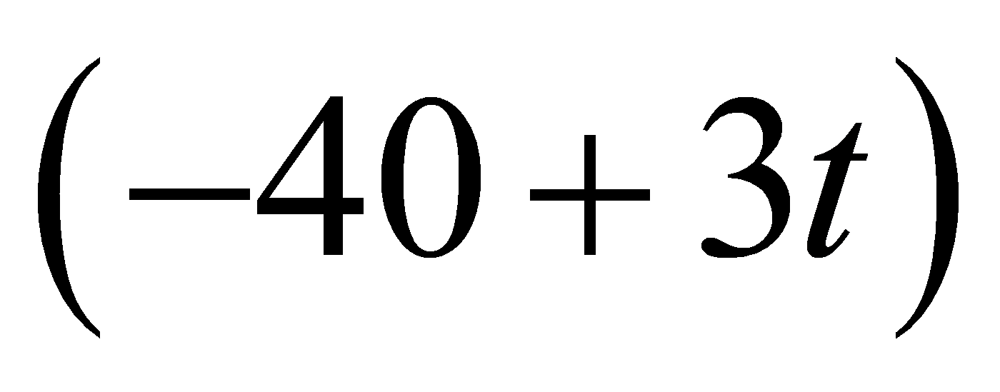
、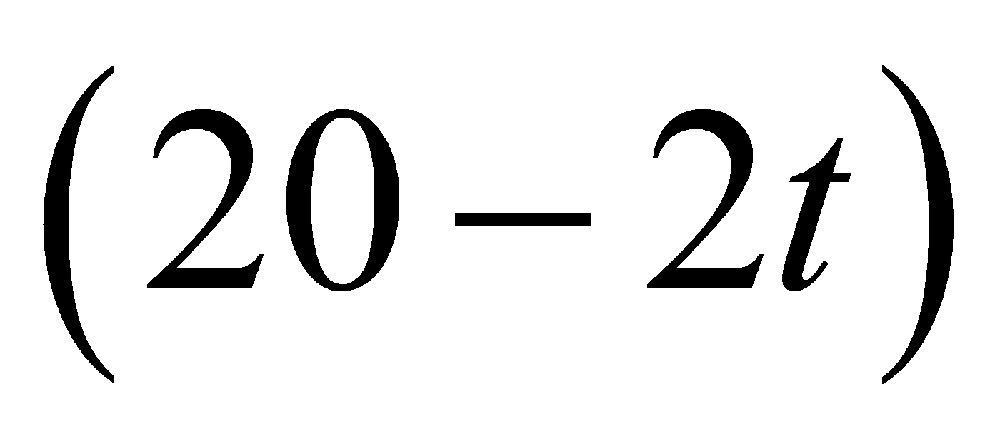
，则线段的中点表示的数为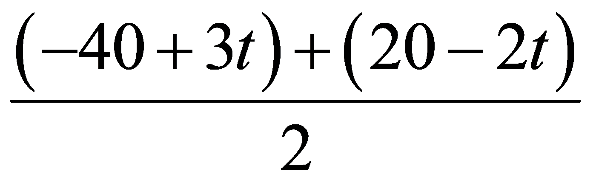
，于是得到方程，解方程即可求解；根据在这一运动过程中起始时刻和终了时刻点的位置，即可求出点的运动方向和运动速度．【详解】（1）解：根据题意可知，运动开始前，、两点的距离
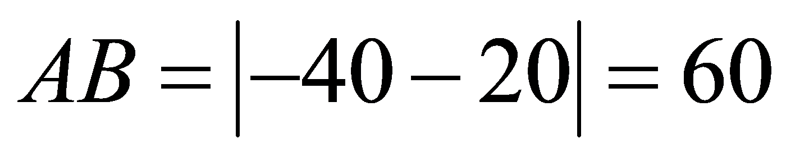
，线段的中点所表示的数为：
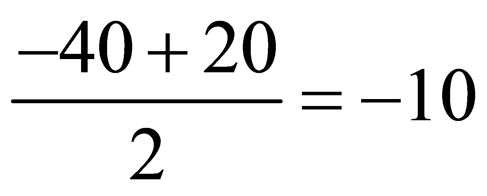
，故答案为：，；
（2）解：根据题意可得：
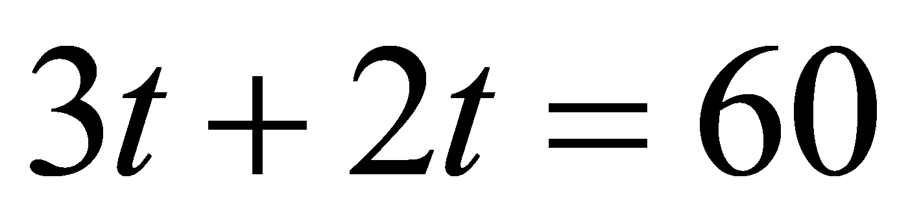
，合并同类项，得：
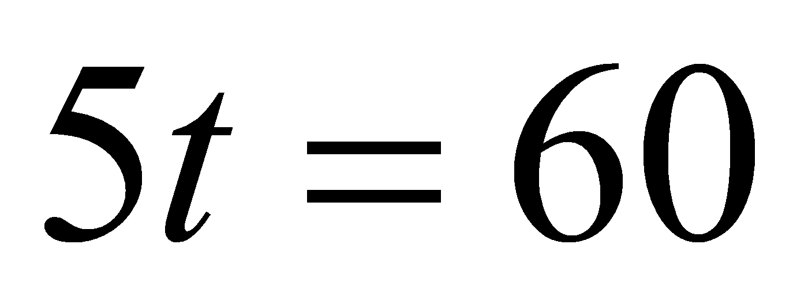
，系数化为 ，得：
，得： ，
，
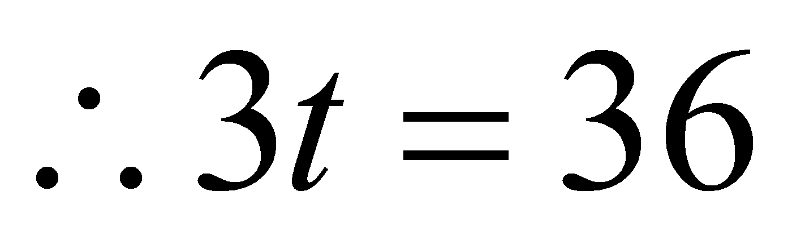
，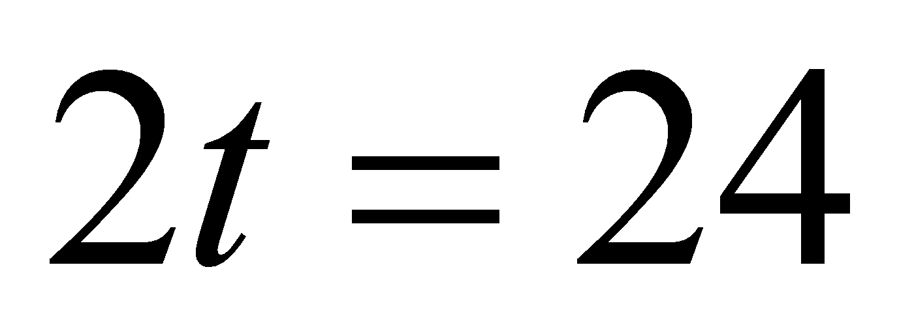
，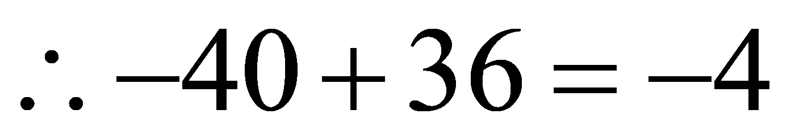
，相遇点所表示的数是，
答：它们按上述方式运动，、两点经过秒会相遇，相遇点所表示的数是；
（3）解：秒后，数轴上点、点表示的数分别为、，则线段的中点表示的数为，
依据题意可得：
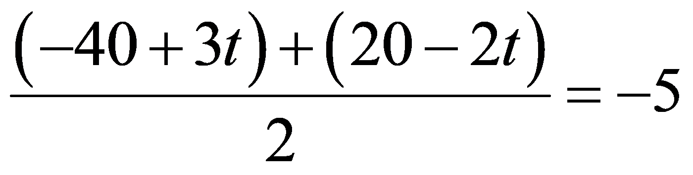
，去分母，得：
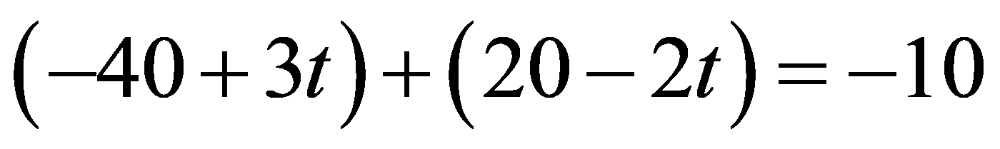
，去括号，得：
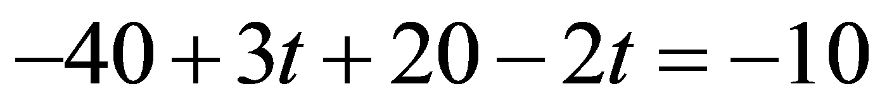
，移项，得：
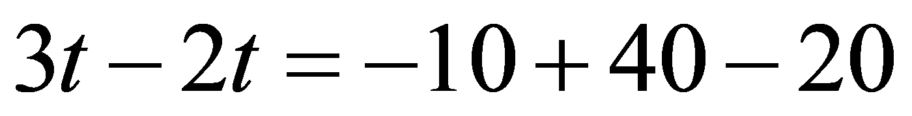
，合并同类项，得：
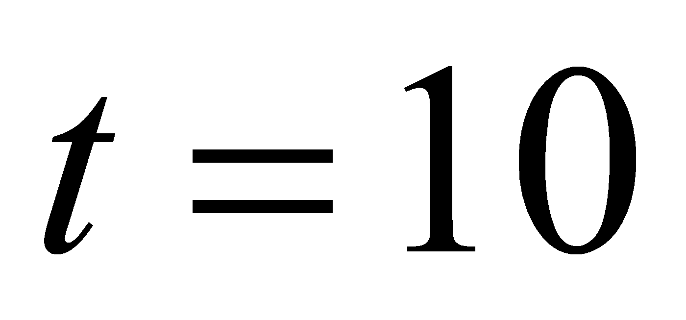
，当 时，中点表示的数为，
时，中点表示的数为，
当时，中点表示的数为，
中点的运动方向向右，运动速度为
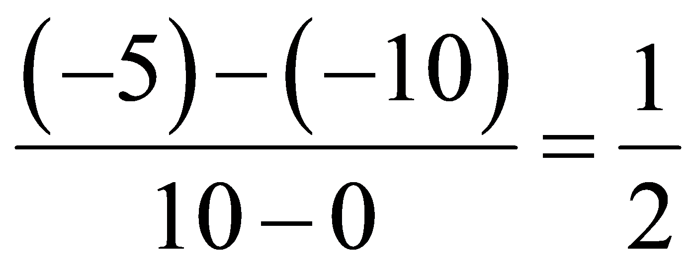
，答：当时，线段的中点表示的数为；在这一运动过程中，点的运动方向向右，运动速度为．
【考点二 数轴上的行程问题之相距问题】
例题：（24-25七年级上·浙江杭州·阶段练习）已知，、分别在数轴上的两点，点对应的数为，点对应的数为20．
(1)请写出 __________；
__________；
(2)现在有一只电子蚂蚁从点出发，以3个单位/秒的速度向右运动，同时另一只电子蚂蚁 恰好从点出发，以2个单位/秒的速度向左运动，设两只电子蚂蚁在数轴上的
恰好从点出发，以2个单位/秒的速度向左运动，设两只电子蚂蚁在数轴上的 点相遇，请你求出点对应的数；
点相遇，请你求出点对应的数；
(3)若当电子蚂蚁从点出发，以3个单位/秒的速度在数轴上匀速运动，同时另一只电子蚂蚊恰好从点出发，以2单位/秒的速度在数轴上匀速运动，经过多长时间两只电子蚂蚁在数轴上相距35个单位长度．
【答案】(1)
(2)8
(3) 或
或 或
或 或1．
或1．
【知识点】数轴上两点之间的距离、数轴上的动点问题、绝对值方程、行程问题(一元一次方程的应用)
【分析】（1）根据数轴上两点之间的距离公式求出答案；
（2）设运动时间为t秒，先表示出点P、Q表示的数，再列方程解答；
（3）题干未指明运动方向，需要分不同情况讨论，表示出点P、Q的表达式，再列绝对值方程求解．
【详解】（1）解：∵A 点对应的数为，B点对应的数为20．
∴AB 两点间的距离为
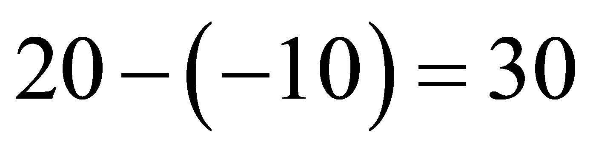
，故答案为：；
（2）设运动时间为t秒，
点Q表示的数是
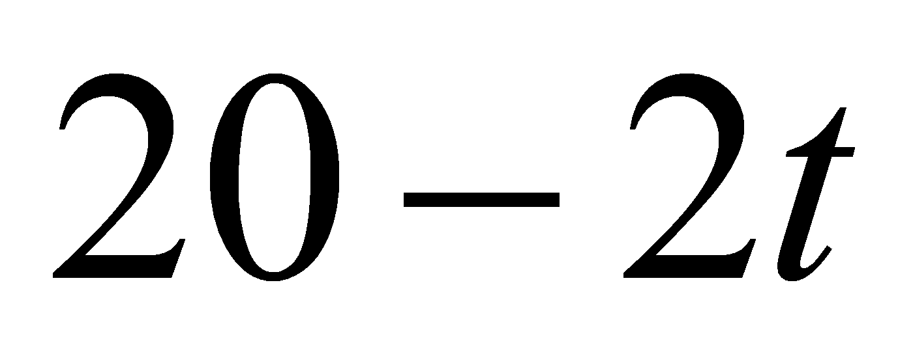
，点P表示的数是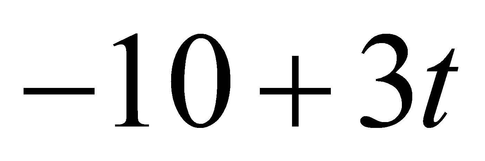
，∴
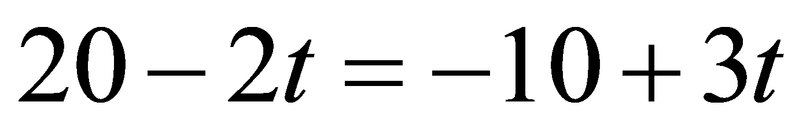
，解得，
∴点C表示的数是
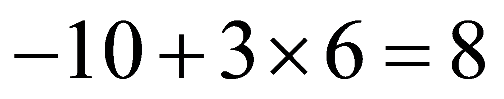
；（3）设运动t秒，
①若电子蚂蚊从点出发，向右运动，电子蚂蚊从点出发，向左运动，
则点P表示的数是 ，点Q表示的数是，
，点Q表示的数是，
依题意得：
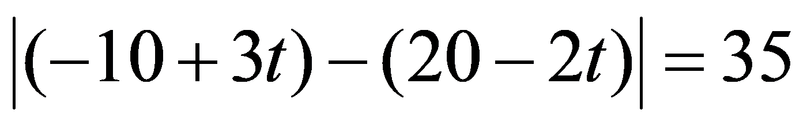
，解得：或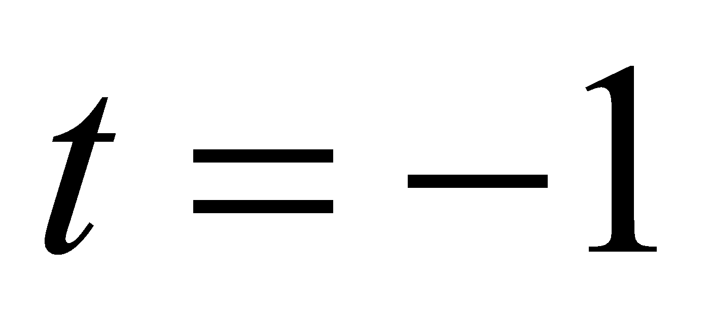
（不合题意舍去）②若电子蚂蚊从点出发，向右运动，电子蚂蚊从点出发，向右运动，
则点P表示的数是，点Q表示的数是
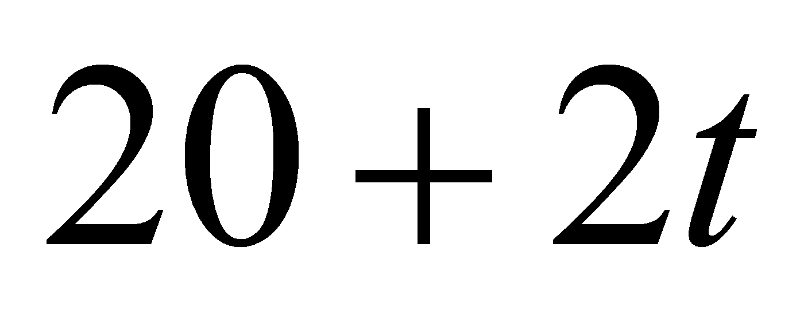
，依题意得：
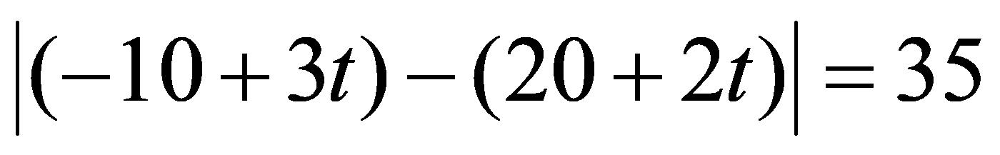
，解得：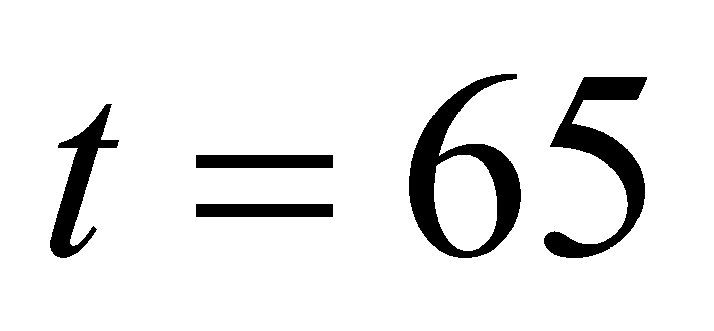
或 （不合题意舍去）
（不合题意舍去）③若电子蚂蚊从点出发，向左运动，电子蚂蚊从点出发，向左运动，
则点P表示的数是
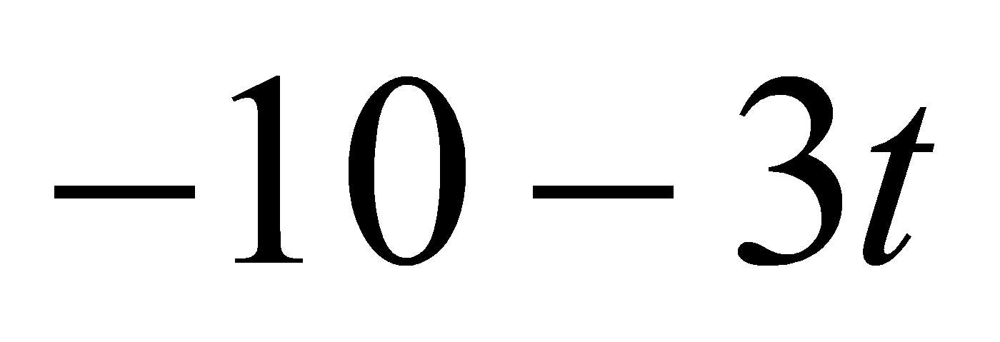
，点Q表示的数是，依题意得：
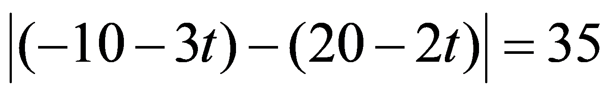
，解得： 或
或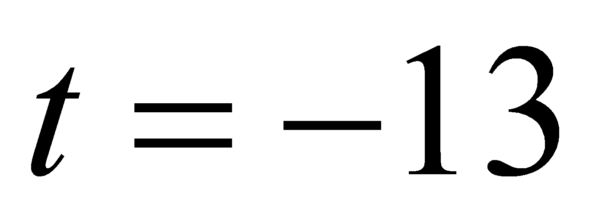
（不合题意舍去）④若电子蚂蚊从点出发，向左运动，电子蚂蚊从点出发，向右运动，
则点P表示的数是，点Q表示的数是，
依题意得：
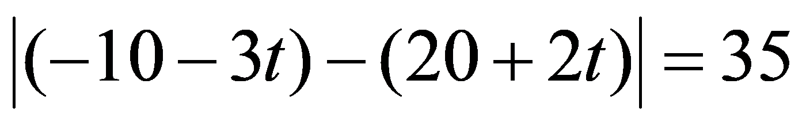
，解得： 或（不合题意舍去）
或（不合题意舍去）综上所述：或或或1．
【点睛】此题考查了数轴上两点之间的距离公式，列一元一次方程解动点问题，数轴上动点问题，正确理解动点问题是解题的关键．
【变式训练】
1．（24-25七年级上·吉林长春·阶段练习）如图，已知数轴上点A表示的数为3，B是数轴上在点A左侧的一点，且A，B两点间的距离为6，动点P从点A出发，以每秒6个单位长度的速度沿数轴向左匀速运动．
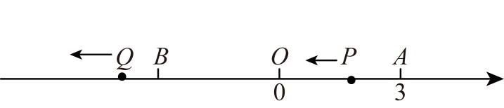
(1)数轴上点B表示的数是_________．
(2)动点Q从点B出发，以每秒2个单位长度的速度沿数轴向左匀速运动，若点P、Q同时出发．求：
①当点P运动多少秒时，点P与点Q相遇？
②当点P运动多少秒时，点P与点Q间的距离为5个单位长度？
【答案】(1)
(2)① 秒；②
秒；② 或
或
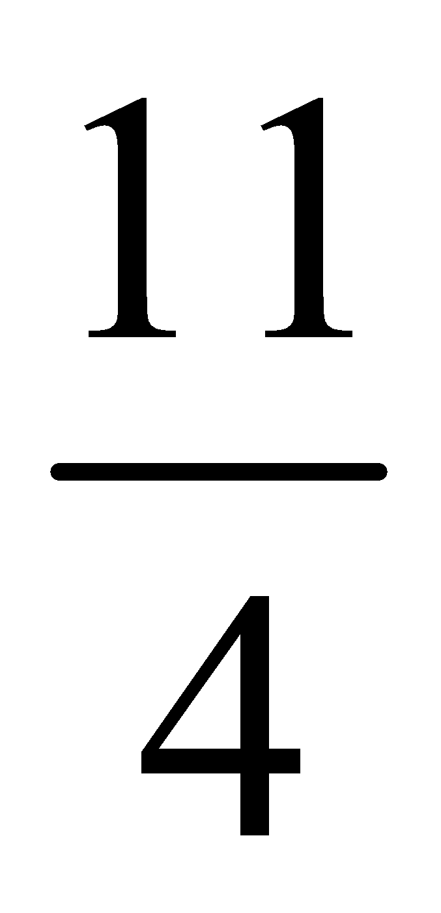
秒【知识点】用数轴上的点表示有理数、数轴上两点之间的距离、数轴上的动点问题、行程问题(一元一次方程的应用)
【分析】本题考查了在数轴上表示数，数轴上两点之间的距离，一元一次方程的应用等知识．熟练掌握在数轴上表示数，数轴上两点之间的距离，一元一次方程的应用是解题的关键．
（1）由题意知，数轴上点B表示的数是
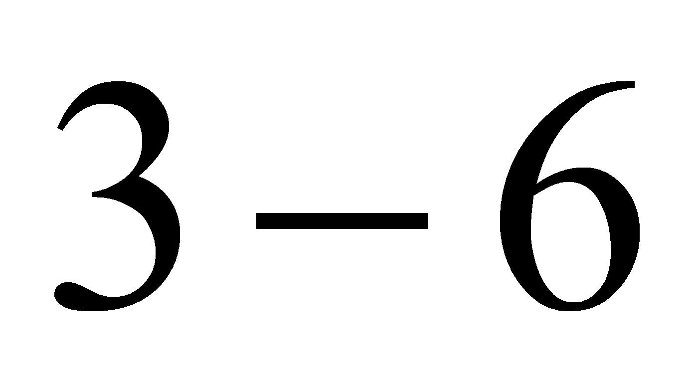
，计算求解即可；（2）①设 的运动时间为，则点表示的数为
的运动时间为，则点表示的数为
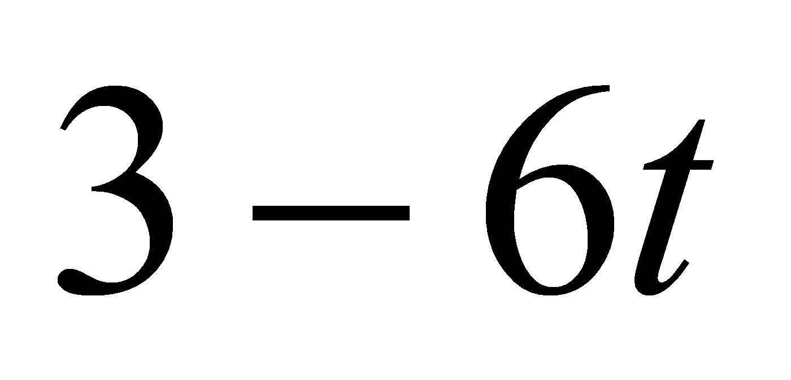
，点表示的数为 ，由点P与点Q相遇，可得
，由点P与点Q相遇，可得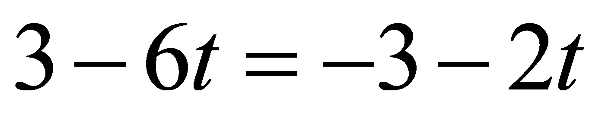
，计算求解即可；②由题意知，，即或，计算求解即可．【详解】（1）解：由题意知，数轴上点B表示的数是，
故答案为：；
（2）①解：设的运动时间为，
∴点表示的数为，点表示的数为，
∵点P与点Q相遇，
∴，
解得， ，
，
∴点P运动秒时，点P与点Q相遇；
②解：由题意知，，
∴或，
解得，或；
∴当点P运动或秒时，点P与点Q间的距离为5个单位长度．
2．（23-24六年级上·山东烟台·期末）如图，数轴上点、之间的距离为20个单位长度，点表示的有理数是8．动点从点出发，以每秒2个单位长度的速度沿数轴向右匀速运动．与此同时，动点从点出发，以每秒3个单位长度的速度沿数轴向左匀速运动，动点以每秒5个单位长度的速度在、之间往返运动．设运动时间为 秒．
秒．

(1)点表示的数是___________，点表示的数是__________；（用含的代数式表示）
(2)求经过多长时间，、两点相遇？此时点一动运动了多少个单位长度？
(3)求经过多长时间，点到原点的距离是点到原点距离的2倍？
【答案】(1) ，
， ；
；
(2)经过，、两点相遇；点一共运动了10个单位长度；
(3)经过1秒或3.5秒，点到原点的距离是点到原点距离的2倍．
【知识点】行程问题(一元一次方程的应用)、数轴上两点之间的距离
【分析】本题考查数轴，一元一次方程的应用：
（1）根据A位于点B左侧以及两点之间的距离，可直接求出答案；
（2）根据题意列出方程，即为、两点相遇相遇的时间，进而求出路程；
（3）分两种情况：当点在原点左侧、点在原点右侧时，得出，当点和点都在原点左侧且、未相遇时，得出，求解即可得出答案．
【详解】（1）解：∵数轴上点、之间的距离为20个单位长度，点表示的有理数是8，A位于点B左侧，
∴点A表示的数为，
根据题意得：点表示的数是，
故答案为：，；
（2）由题意得：点表示的数是，
则，
解得： ，
，
答：经过，、两点相遇，
∵ ，
，
∴点一共运动了10个单位长度；
（3）当点在原点左侧、点在原点右侧时，
，
解得，
当点和点都在原点左侧且、未相遇时，
，
解得，
所以，经过1秒或3.5秒，点到原点的距离是点到原点距离的2倍．
【考点三 数轴上的行程问题之三点中点问题】
例题：（23-24七年级上·浙江杭州·期末）如图（1），已知A，B为数轴上的两点，点O表示原点，点A表示的数为 ．动点C从A出发做匀速运动，动点D从B出发做匀速运动．
．动点C从A出发做匀速运动，动点D从B出发做匀速运动．
(1)若动点C向右运动，动点D向左运动，且两点同时出发，它们运动的时间、在数轴上的位置所表示的数记录如下表．请将表格补充完整．
时间（秒） | 0 | 1 | 2 |
C点在数轴上的位置所表示的数 |
|
| _____ |
D点在数轴上的位置所表示的数 | _____ | 3 | 2 |
(2)若点D先出发2秒后，点C开始运动，它们以（1）中各自的速度和方向运动，求两点相遇时的位置所表示的数．
(3)如图（2），若动点C，D以（1）中各自的速度同时反方向运动，同一时刻数轴上另有一动点P以恒定速度和方向从点O出发运动．在运动过程中，如果点F为线段 的中点，且，试求点P的运动方向和速度．
的中点，且，试求点P的运动方向和速度．
【答案】(1) ，
， ；
；
(2) ；
；
(3)点P向右运动，且运动速度为个单位/秒．
【知识点】线段中点的有关计算、行程问题(一元一次方程的应用)、数轴上两点之间的距离
【分析】（1）本题考查数轴上两点之间的距离，利用表格得出点C，点D的运动速度，根据距离时间速度，求出距离，即可解题．
（2）本题考查一元一次方程的实际应用，设C点的运动 秒后，两点相遇，根据点C的运动距离
秒后，两点相遇，根据点C的运动距离 点D总的的运动距离，建立方程求解，即可得到相遇时间，再推出点C的运动距离，即可解题．
点D总的的运动距离，建立方程求解，即可得到相遇时间，再推出点C的运动距离，即可解题．
（3）本题考查一元一次方程的实际应用，以及线段中点的定义，设点P的运动速度为 个单位/秒，运动时间为秒，表示出，，，根据题意分以下两种情况讨论，①点P向右运动，②点P向左运动，根据以上两种情况通过建立方程求解，即可解题．
个单位/秒，运动时间为秒，表示出，，，根据题意分以下两种情况讨论，①点P向右运动，②点P向左运动，根据以上两种情况通过建立方程求解，即可解题．
【详解】（1）解：由题知，点C向右运动的速度为：个单位/秒，
当时间为2秒时，C点在数轴上的位置所表示的数为：，
点D向左运动的速度为：个单位/秒，
当时间为0秒时，点D在数轴上的位置所表示的数为：，
故答案为：，；
（2）解：由动点D从B出发可知，点B表示的数为，
设C点的运动秒后，两点相遇，
根据题意有：，
解得： ，
，
C点运动的距离为，
两点相遇时的位置所表示的数为：；
（3）解：设点P的运动速度为个单位/秒，运动时间为秒，
下面分情况讨论：
①点P向右运动，
有，，，
点F为线段的中点，
，
，
，整理得 ，解得
，解得 ，
，
即点P向右运动，且运动速度为个单位/秒；
②点P向左运动，
有，
，
，整理得，解得 （不合题意，舍去），
（不合题意，舍去），
综上所述，点P向右运动，且运动速度为个单位/秒．
【变式训练】
1．（24-25七年级上·江苏南京·阶段练习）已知数轴上有A，B，C三点，分别表示数 ，，10．甲、乙两人分别从A，C两点同时相向而行，甲的速度为4个单位/秒，乙的速度为6个单位/秒
，，10．甲、乙两人分别从A，C两点同时相向而行，甲的速度为4个单位/秒，乙的速度为6个单位/秒

(1)问甲、乙在数轴上表示有理数________的点相遇；
(2)________秒后甲到A，B，C三点的距离之和为40个单位．
(3)若甲、乙两人（用P表示甲、Q表示乙）分别从A，C两点同时相向而行，甲的速度变为原来的3倍，乙的速度不变，直接写出多少时间后，原点O、P与Q三点中，有一点恰好是另两点所连线段的中点．
【答案】(1)
(2)2或5
(3)秒或秒或秒
【知识点】数轴上两点之间的距离、行程问题(一元一次方程的应用)
【分析】本题主要考查了数轴上两点距离计算，一元一次方程的应用：
（1）先求出点A和点C的距离，再求出运动时间，进而求出相遇的点表示的数即可；
（2）设 秒后甲到，，三点的距离之和为40个单位，根据题意分析出甲应在或
秒后甲到，，三点的距离之和为40个单位，根据题意分析出甲应在或 之间，再分别表示出甲到三点的距离，进而建立方程求解即可；
之间，再分别表示出甲到三点的距离，进而建立方程求解即可；
（3）先求出甲的新速度变为12个单位/秒，设运动时间为x秒，再分①当原点 是与两点的中点时，②当是甲与原点两点的中点时，③当是与原点两点的中点时，三种情况根据数轴上两点中点计算公式列出方程求解即可．
是与两点的中点时，②当是甲与原点两点的中点时，③当是与原点两点的中点时，三种情况根据数轴上两点中点计算公式列出方程求解即可．
【详解】（1）解：秒，
，
∴甲、乙在数轴上表示有理数的点相遇，
故答案为：；
（2）解：设秒后甲到，，三点的距离之和为40个单位，
∵点距，两点的距离为，点距、两点的距离为，点距、的距离为，
∴甲应在或之间．
①当甲在之间时，则
解得；
②当甲在之间时：，
解得 ；
；
综上所述，2秒或5秒后，甲到A，B，C三点的距离之和为40个单位；
故答案为：2或5；
（3）∵甲的速度变为原来的3倍，
∴甲的新速度变为12个单位/秒，
设运动时间为x秒
①当原点是与两点的中点时，
依题意得：，
解得 ，
，
②当是与原点两点的中点时，
依题意得：，
解得 ；
；
③当是与原点两点的中点时，
则依题意得：，
解得，
综上所述，秒或秒或秒后，原点、与三点中，有一点恰好是另两点所连线段的中点．
2．（23-24七年级下·重庆南岸·开学考试）数轴体现了数形结合的数学思想，请解决下面与数轴相关的问题．
(1)如图，数轴上点A表示的数为，点B表示的数为12，则A，B两点之间的距离 ，线段的中点表示的数为 ．找出所有符合条件的整数x，使得成立，这样的整数是 ；
(2)在点A表示的数为，点B表示的数为12的条件下，若点P从点A出发，以每秒3个单位长度的速度沿数轴向右运动，同时点Q从点B出发，以每秒2个单位长度的速度向左运动．设运动时间为t秒（ ）．求当t为何值时，P，Q两点相遇，并写出相遇点所表示的数；
）．求当t为何值时，P，Q两点相遇，并写出相遇点所表示的数；
(3)若点A表示的数 ，点B与点A的距离是10，且点B在点A的右侧，动点P、Q同时从A、B出发沿数轴正方向运动，点P的速度是每秒3个单位长度，点Q的速度是每秒个单位长度，求运动几秒后，B、P、Q三点中，有一点恰好是另两点所连线段的中点？（请写出必要的求解过程）．
，点B与点A的距离是10，且点B在点A的右侧，动点P、Q同时从A、B出发沿数轴正方向运动，点P的速度是每秒3个单位长度，点Q的速度是每秒个单位长度，求运动几秒后，B、P、Q三点中，有一点恰好是另两点所连线段的中点？（请写出必要的求解过程）．
【答案】(1)15； ；3或
；3或
(2)当 时，P，Q两点相遇，相遇点所表示的数为
时，P，Q两点相遇，相遇点所表示的数为
(3) 秒或秒或5秒
秒或秒或5秒
【知识点】数轴上的动点问题、绝对值的意义、行程问题(一元一次方程的应用)、线段中点的有关计算
【分析】（1）根据数轴上两点间的距离公式即可求得A，B两点之间的距离，根据线段中点的定义，即可设元列方程，求出线段的中点表示的数，根据绝对值的几何意义，即可分情况讨论，求得使成立的整数值；
（2）分别求出点P，点Q所对应的数，即可列方程求解；
（3）先求出运动t秒后点P所对应的数为，点Q所对应的数为，再分三种情况讨论，根据线段中点的定义，分别列方程求解．
【详解】（1）；
设线段的中点表示的数为x，
则，
解得；
对于，设点A表示的数为，点B表示的数为2，点P所表示的数为x，则，，
，
点P在点A的左侧或在点B的右侧，
当点P在点A的左侧时，，
，
点P所表示的数为；
当点P在点B的右侧时，，
，
点P所表示的数为3；
综上所述，点P所表示的数为3或；
故答案为：15；；3或．
（2）运动t秒后点P对应的数为，点Q对应的数为，
根据题意得，
解得，
当时，P，Q两点相遇，相遇点所表示的数为；
（3）运动秒或秒或5秒后，B、P、Q三点中，有一点恰好是另两点所连线段的中点．
理由如下：
点A表示的数，点B与点A的距离是10，
点B所表示的数是9，
运动t秒后点P所对应的数为，点Q所对应的数为，
①当B是 的中点时，
的中点时， ，
，
，
解得；
②当P是 的中点时，则
的中点时，则 ，
，
，
解得；
③当Q是 的中点时，则，
的中点时，则，
，
解得；
综上所述，运动秒或秒或5秒后，B、P、Q三点中，有一点恰好是另两点所连线段的中点．
【点睛】本题考查了数轴上两点间的距离公式，一元一次方程的应用，绝对值的几何意义，线段中点的有关计算,理解题意，利用数形结合的思想列方程求解是解题的关键．
【考点四 数轴上的行程问题之新定义型问题】
例题：（23-24七年级上·浙江宁波·期中）【新知理解】如图①，点C在线段上，图中的三条线段、 和．若其中一条线段的长度是另外一条线段长度的2倍，则称点C是线段的“蓝青点”．
和．若其中一条线段的长度是另外一条线段长度的2倍，则称点C是线段的“蓝青点”．
（1）填空：线段的中点_________这条线段的“蓝青点”；（填“是”或“不是”）
【问题解决】（2）如图②，点A和B在数轴上表示的数分别是和40，点C是线段的“蓝青点”，求点C在数轴上表示的数．
【应用拓展】（3）在（2）的条件下，动点P从点A出发，以每秒2个单位长度的速度沿向点B匀速运动；动点Q从点B出发，以每秒3个单位长度的速度沿 向点A匀速运动．点P、Q同时出发，当其中一点到达终点时，两个点运动同时停止，设运动的时间为t秒，当t为何值时，A、P、Q三点中，其中一点恰好是另外两点为端点的线段的“蓝青点”？（直接写出答案）．
向点A匀速运动．点P、Q同时出发，当其中一点到达终点时，两个点运动同时停止，设运动的时间为t秒，当t为何值时，A、P、Q三点中，其中一点恰好是另外两点为端点的线段的“蓝青点”？（直接写出答案）．
【答案】（1）是；
（2）①若C为中点，则C点表示的数为10；②若 ，则C点表示的数为20；③若
，则C点表示的数为20；③若 ，则C点表示的数为0．
，则C点表示的数为0．
（3） ，，，，
，，，， ，
，
【知识点】数轴上的动点问题、行程问题(一元一次方程的应用)
【分析】（1）根据“蓝青点”的定义可得线段的中点是这条线段的“蓝青点”；
（2）设C点表示的数为x，分三种情况①若C为中点，②若，③若，分别列方程求解即可．
（3）根据题意，t秒后，P点对应的数为 ，Q点对应的数为．然后分6种情况讨论．相遇前分，，三种情况，相遇后分，，三种情况，分别列一元一次方程求出t的值即可．
，Q点对应的数为．然后分6种情况讨论．相遇前分，，三种情况，相遇后分，，三种情况，分别列一元一次方程求出t的值即可．
【详解】解：（1）∵原线段的长是线段中点分成的短线段的2倍，
∴线段的中点是这条线段的“蓝青点”．
故答案为：是．
（2）设C点表示的数为x，
①若C为中点，即 ，
，
则，
解得 ．
．
②若，
则，
解得 ，
，
③若，
则，
解得 ．
．
综上，C点表示的数为10或20或0．
（3）解：根据题意，t秒后，P点对应的数为，Q点对应的数为．
P、Q相遇前，P点是线段 的“蓝青点”，则分三种情况：
的“蓝青点”，则分三种情况：
①，
，
解得 ．
．
②，即时，
，
解得．
③，
，
解得，
P、Q相遇后，Q点是线段 的“蓝青点”，则分三种情况：
的“蓝青点”，则分三种情况：
①，
，
解得．
②，即，
，
解得 ．
．
③，
，
解得．
【点睛】本题考查了数轴上的动点问题，和一元一次方程解行程问题．正确的用含有t的代数式表示出P、Q所表示的数，掌握分类讨论是解题的关键．
【变式训练】
1．（23-24七年级上·广东惠州·阶段练习）定义：A，B，C为数轴上三点，当点C在线段上时，若点C到点A的距离是点C到点B的距离2倍，我们称点C是 的美好点．例如：如图①，点A表示数，点B表示数2，点C表示数1，点D表示数0．点C到点A的距离是2，到点B的距离是1，那么点C是的美好点；又如，点D到点A的距离是1，到点B的距离是2，那么点D就不是的美好点，但点D是的美好点．
的美好点．例如：如图①，点A表示数，点B表示数2，点C表示数1，点D表示数0．点C到点A的距离是2，到点B的距离是1，那么点C是的美好点；又如，点D到点A的距离是1，到点B的距离是2，那么点D就不是的美好点，但点D是的美好点．

如图②，M，N为数轴上两点，点M表示数 ，点N表示数2．
，点N表示数2．

(1)①求 的美好点表示的数为______．
的美好点表示的数为______．
②求 的美好点表示的数为______．
的美好点表示的数为______．
(2)数轴上有一个动点P从点M出发，沿数轴以每秒2个单位长度的速度向右运动，设点P运动的时间为t秒，当点P为的美好点时，求t的值．
【答案】(1)，
(2)
【知识点】其他问题(一元一次方程的应用)、行程问题(一元一次方程的应用)、数轴上两点之间的距离
【分析】（1）根据定义，构建方程求解；
（2）根据定义， ，结合行程公式构建方程求解；
，结合行程公式构建方程求解；
【详解】（1）解：①令美好点表示的数为x，由题知，
解得，
∴的美好点表示的数为；
②令美好点表示的数为y，由题知，,
解得，
∴的美好点表示的数为；
（2）解：根据题意，得
∴
解得
【点睛】本题考查数轴上两点间的距离表示；根据定义构建方程是解题的关键．
2．（23-24七年级上·湖北武汉·期中）已知，两点在数轴上对应的有理数分别为 ，
， ，且，满足：
，且，满足： ．
．
(1)则 ________；
________； ________；
________；
(2)定义：若点为数轴上，两点之间一点，且到，两点的距离满足：其中一个距离是另一个距离的2倍，则称为，两点的“友好点”．
①求，两点的“友好点”在数轴上对应的有理数；
②点以每秒4个单位长度的速度从点出发，沿数轴向右运动，同时点以每秒1个单位长度的速度从点出发，沿数轴向右运动，当点、相遇则停止运动．设运动时间为秒，若整个运动过程中，，，三点中有一点是另两点的“友好点”，求值．
【答案】(1)，12
(2)①6或0；②3或4或或
【知识点】行程问题(一元一次方程的应用)、绝对值非负性、数轴上的动点问题
【分析】本题是新定义题型，主要考查了数轴，绝对值以及偶次幂的非负性的应用，理解新定义，进行分类讨论是解题的关键．
（1）直接根据绝对值的非负性，偶次方的非负性即可得出答案；
（2）①设点M表示的数为m，然后根据友好点的定义求解即可；
②根据题意得点P表示的数是，点Q表示的数是，然后分点B在P、Q之间；点B在P、Q的左侧讨论即可．
【详解】（1）解：∵，，，
∴，，
∴ ，．
，．
故答案为：，12；
（2）①设点M表示的数为m，
根据题意得或，
解得 或
或 ，
，
所以A、B两点的和谐点M在数轴上对应的有理数是6或0．
②设运动的时间为x秒，点P表示的数是，点Q表示的数是，
当B在P、Q之间时，
根据题意，得或，
解得或4；
当点B在P、Q的左侧时，
根据题意，得或，
解得或，
综上，当t的值为3或4或或时，，，三点中有一点是另两点的“友好点”．
【考点五 数轴上的行程问题之折线数轴问题】
例题：（24-25七年级上·四川成都·阶段练习）如图，将一条数轴在原点O和点B处各折一下，得到一条“折线数轴”，图中，点A表示的数为，点B表示的数为10，点C表示为18，我们称点A和点C在该数轴上的“折线距离”为24个长度单位，动点P从点A出发，以1单位/秒的速度沿着“折线数轴”的正方向运动，从点O运动到点B期间速度变为原来的两倍，之后立刻恢复原速；同时，动点Q从点C出发，以2单位/秒的速度沿着折线数轴的负方向运动，从点B运动到点O期间速度变为原来的一半，之后也立刻恢复原速，设运动的时间为t秒，则：
(1)动点P从点A运动至点C需要______秒，动点Q从点C运动至点A需要_______秒；
(2)若P，Q两点在点M处相遇，求相遇时间t以及点M在折线数轴上所表示的数；
(3)是否存在t值，使得P、O两点在数轴上的“折线距离”与Q、B两点在数轴上的的“折线距离”相等．
【答案】(1)19，17；
(2) ；点M在折线数轴上所表示的数是
；点M在折线数轴上所表示的数是
(3)当 秒或秒或
秒或秒或  秒或17秒时，
秒或17秒时，
【知识点】行程问题(一元一次方程的应用)、用数轴上的点表示有理数、数轴上的动点问题
【分析】本题考查的是数轴上的动点问题，数轴上两点之间的距离，一元一次方程的应用，清晰的分类讨论是解本题的关键．
（1）利用路程除以速度求解即可得到答案；
（2）先判断相遇点M在 上，再根据题意列方程求解即可；
上，再根据题意列方程求解即可；
（3）分四种情况讨论：①当点P在 上，点Q在
上，点Q在 上时；②当点P在
上时；②当点P在 上时，点Q在上时；③当点P在上时，点Q在上时；④当点P在上时，点Q在上时，再列方程求解即可．
上时，点Q在上时；③当点P在上时，点Q在上时；④当点P在上时，点Q在上时，再列方程求解即可．
【详解】（1）解：动点P从点A运动至点O需要 秒，
秒，
从点O运动至点B需要 秒，
秒，
从点B运动至点C需要 秒，
秒，
则动点P从点A运动至点C需要秒；
动点Q从点C运动至点B需要 秒，
秒，
从点B运动至点O需要 秒，
秒，
从点O运动至点A需要 秒，
秒，
则动点Q从点C运动至点A需要 秒；
秒；
故答案为：19，17；
（2）解：由（1）可得相遇点M在上，
∴由题意得，
解得，
∴ ，即点M在折线数轴上所表示的数是；
，即点M在折线数轴上所表示的数是；
（3）解：①当点P在上，点Q在上时，，，
∵，
∴ ，
，
解得；
②当点P在上时，点Q在上时，， ，
，
∵，
∴ ，
，
解得；
③当点P在上时，点Q在上时，，，
∵，
∴，
解得；
④当点P在上时，点Q在上时，， ，
，
∵，
∴，
解得 ；
；
综上：当秒或秒或秒或17秒时．
【变式训练】
1．（23-24六年级下·黑龙江哈尔滨·阶段练习）已知，如图，数轴上依次有、、三点，它们在数轴上对应的数分别是、、 ，其中、满足
，其中、满足 ，点到点的距离为20．
，点到点的距离为20．

(1)求、、的值．
(2)如图1，动点从点出发，以每秒2个单位长度的速度沿着数轴的正方向运动，动点从点出发，以每秒1单位长度的速度沿着数轴的负方向运动，、两点同时出发，在点处相遇，求出相遇点所对应的数是多少；
(3)如图2，将数轴在原点和点处各折一下，得到一条“折线数轴”，（图中、两点在“折线数轴”上的距离为28个单位长度）．动点从点出发，以每秒2个单位长度的速度沿“折线数轴”的正方向运动，从点运动到点期间速度变为原来的一半，之后立刻恢复；同时，动点从点出发以每秒1个单位长度沿着“折线数轴”的负方向运动，从点运动到点期间速度变为原来的2倍，之后立刻恢复，设运动时间为秒，请直接写出当为何值时，、两点在“折线数轴”上的距离与、两点在“折线数轴”的距离相等．
【答案】(1)； ；
；
(2)
(3)4，7，10，16
【知识点】数轴上两点之间的距离、数轴上的动点问题、绝对值非负性、行程问题(一元一次方程的应用)
【分析】（1）由题中条件，利用平方与绝对值非负性，结合非负式和为 的条件求解即可得到答案，再由数轴上两点之间距离表示方法即可得到答案；
的条件求解即可得到答案，再由数轴上两点之间距离表示方法即可得到答案；
（2）设相遇点所对应的数是，相遇时间为，由相遇问题列方程组求解即可得到答案；
（3）根据数轴上动点问题，分四种情况：当不在线段上；当在线段上；当在线段上；当在线段上、在线段上；列方程求解即可得到答案．
【详解】（1）解：，
，
解得 ，
，
、在数轴上对应的数分别是、，如图所示：
 ，
，
解得；
（2）解：设相遇点所对应的数是，相遇时间为，则
，解得 ，
，
相遇点所对应的数是；
（3）解：由（1）知；；，
 ，
， ，
，
动点从点出发，以每秒2个单位长度的速度沿“折线数轴”的正方向运动，从点运动到点期间速度变为原来的一半，
走完用时为 秒，走完用时秒；
秒，走完用时秒；
动点从点出发以每秒1个单位长度沿着“折线数轴”的负方向运动，从点运动到点期间速度变为原来的2倍，
走完用时为秒，走完用时秒；
当不在线段上时，如图所示：
则由、两点在“折线数轴”上的距离与、两点在“折线数轴”的距离相等得到，解得；
当在线段上时，如图所示：
当在线段上时，如图所示：
则由、两点在“折线数轴”上的距离与、两点在“折线数轴”的距离相等得到，解得；
当在线段上、在线段上时，如图所示：
则由、两点在“折线数轴”上的距离与、两点在“折线数轴”的距离相等得到 ，解得
，解得 ；
；
当为4或7或10或16时，、两点在“折线数轴”上的距离与、两点在“折线数轴”的距离相等．
【点睛】本题考查数轴综合问题，涉及数轴表示有理数、数轴上两点之间距离的表示方法、非负式和为零的条件、数轴上动点问题、相遇问题等知识，根据题意，数形结合列方程求解是解决问题的关键．
2．（23-24七年级上·重庆渝北·阶段练习）如图将一条数轴在原点O，点B，点C，点D出各折一下，得到“折线数轴”．图中点A表示，点B表示8，点C表示16，点D表示24，点E表示28．我们称点A和点E相距36个单位长度，动点P从A从出发，以每秒4个单位的速度沿着“折线数轴”的正方向移动，同时，动点Q从E出发以每秒3个单位的速度沿着“折线数轴”的负方向移动，两个点上坡时候的速度均是各自初始速度的一半，下坡时候的速度均是各自初始速度的2倍，平地则保持初始速度不变．当点P运动到点E时P点P停止运动，当点Q运动到点A时点Q停止运动，设：运动时间为t．问：
(1)动点P从点A运动到E点需要 秒，此时点Q对应的数是 ；
(2)P，Q两点在点M出相遇，求出相遇点M所对应的数是多少？
(3)求当t为何值时，P，B两点在这个上数轴上相距的长度与Q，D两点在这个数轴上相距长度相等．
【答案】(1)10，4
(2)
(3)4， ，10
，10
【知识点】数轴上两点之间的距离、数轴上的动点问题、几何问题(一元一次方程的应用)、行程问题(一元一次方程的应用)
【分析】（1）根据点在各段的运动速度结合公式：时间路程速度即可得到动点从点运动至 点需要的时间，分析点在每段上运动需要的时间即可解答；
点需要的时间，分析点在每段上运动需要的时间即可解答；
（2）分析可知当，两点在处相遇时，点在段，再求出两点相遇所用时间，最后计算出点所对应的数即可；
（3）根据题意可分情况讨论：①当点在段时，点在 段，此时
段，此时 大于8，小于4，不符合题意；②当点在段时，点在
大于8，小于4，不符合题意；②当点在段时，点在 段，根据列出方程并求解；③当点在段时，点在段，根据列出方程并求解；④当点在段时，点在段时，小于8，大于8，不符合题意；⑤当点在段，点在段，根据列出方程并求解；⑥当点在段，点在段，根据列出方程并求解．
段，根据列出方程并求解；③当点在段时，点在段，根据列出方程并求解；④当点在段时，点在段时，小于8，大于8，不符合题意；⑤当点在段，点在段，根据列出方程并求解；⑥当点在段，点在段，根据列出方程并求解．
【详解】（1）解：由题意可知，动点在、、段的速度均为4单位 秒，在段的速度为2单位秒，在段的速度为8单位秒，
秒，在段的速度为2单位秒，在段的速度为8单位秒，
，，
动点从点运动至点需要的时间为（秒 ，
，
动点从点出发，以3单位秒的速度沿着数轴的负方向运动，在，，段的速度为3单位秒，段的速度为1.5单位秒，在 段的速度为6单位秒，
段的速度为6单位秒，
动点从点运动到点 需要
需要 （秒，从点运动到点需要
（秒，从点运动到点需要 （秒，从点运动到点需要
（秒，从点运动到点需要 （秒，
（秒，
 （秒，
（秒，
 ，
，
 ．
．
此时点对应的点是4；
故答案为：10，4；
（2）由（1）可知，，两点在处相遇时，点在段，
动点由点经过点到点点用时为（秒，
动点从点到点用时为（秒，
6秒到秒动点的路程 ，
，
相遇的时间 （秒，
（秒，
点的路程，
点所对应的数；
（3）①当点在段时，点在段，此时大于8，小于4，不符合题意；
②当点在段时，点在段，
若，则， ，
，
 ，
，
解得：；
③当点在段时，点在段，
若，则 ，，
，，
 ，
，
解得：（舍去）；
④当点在段时，点在 段时，小于8，大于8，不符合题意；
段时，小于8，大于8，不符合题意；
⑤当点在段，点在段，
若，则， ，
，
 ，
，
解得：；
⑥当点在段，点在段，
若，则， ，
，
 ，
，
解得：．
综上所述，当为4或8.8或10时，，两点在数轴上相距的长度与，两点在数轴上相距的长度相等．
【点睛】本题主要考查一元一次方程的应用、数轴，解题关键是读懂题意，找到等量关系，列出方程．本题难度适中，是中考常考题型，要求学生牢固掌握．